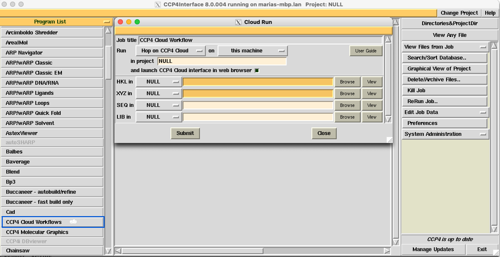
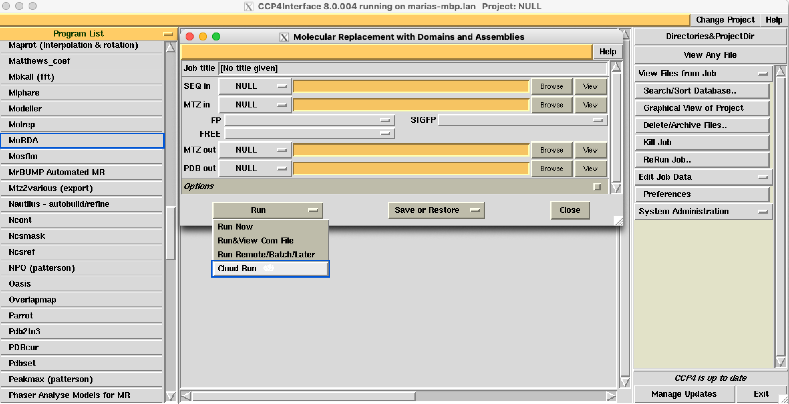
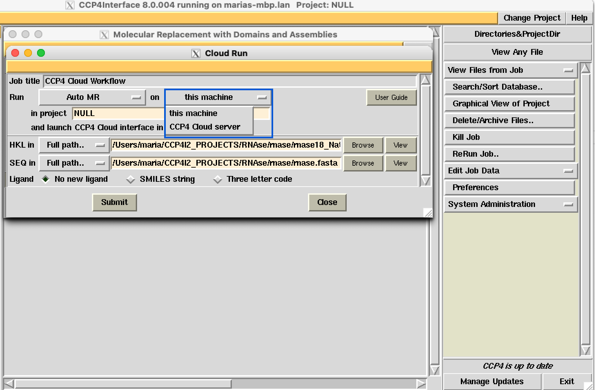
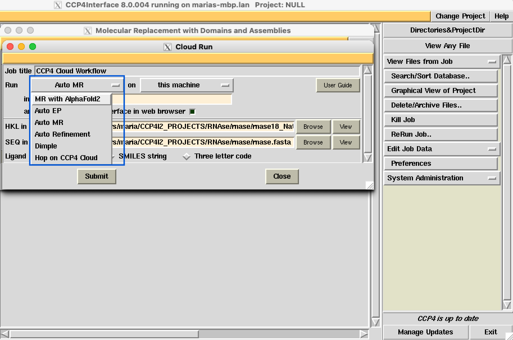
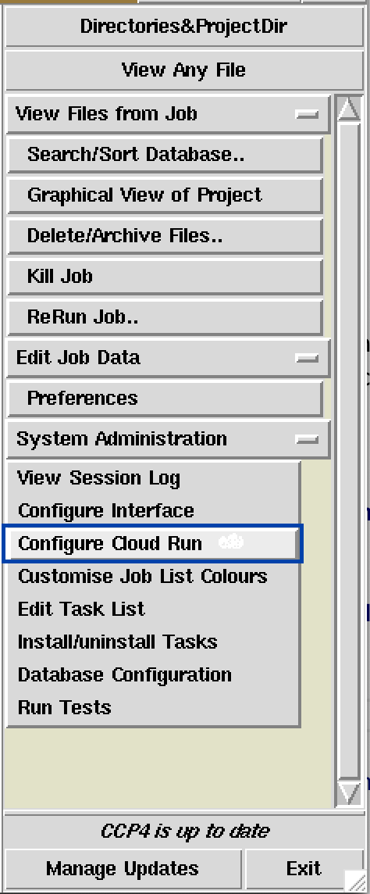

4. Cloud Run facility in CCP4i interface¶
CCP4 Cloud projects can be initiated and executed from CCP4i interface using CCP4 Clouds Workflows task
{kind=link}
or using Cloud run option in Refmac, Molrep, Crank-2, MrBump and Morda tasks interfaces.
{kind=link}
Two running modes are available. “This machine” mode allows launching local installation of CCP4 Cloud interface on the users machine. All tasks will be run on user machine, data won’t transfer anywhere. This mode allows running Cloud without internet connection or authorisation on the Cloud server
To Run jobs remotely on the server machines use the “CCP4 Cloud server” mode.
{kind=link}
Next Cloud run tasks are available:
{kind=link}
MR with Alphafold2: creates standard project, import data and start workflow based on structure prediction with AlphaFold-2
Note
available on the CCP4 Cloud remote only, unless local AlphaFold setup linked with CCP4 Cloud
AUTO EP: creates standard project, import data and start Auto-EP workflow based in Crank-2 pipelineAUTO MR: creates standard project, import data and start Auto-MR workflow utilising MrBump and Simbad pipelinesAUTO Refinement: creates standard project, import data and start Auto-REL workflow, performing automatic structure refinement with optimization of Refmac parameters and fitting water moleculesDimple: creates standard project, import data and start Dimple workflow for fast ligand blob identification and fittinghop-on: creates hop-on project, import data and stop
{kind=link}
To send data on the remote server login (1) and CloudRun Id(2) are required. They can be found on My account page. Information how to find login (1) and CloudRun Id(2) can be acceded by pressing help (3) button.
Copy your CloudRun Id from the web browser, paste it into ccp4i (control-V, even on macOS), and enter your login name.
Keep “Save any changes to ccp4i configuration on successful submission” checked to save your authentication data to the ccp4i configurations.
Or edit Cloud Run configuration in System Administration => Configure Cloud Run
{kind=link}
Note
You can change these from either the Cloud Run task interface or System Administration => Configure Cloud Run.
Note
Check the box next to “and launch CCP4 Cloud interface in web browser” to start a new CCP4 Cloud session or keep it unchecked to stay in an existing one.
After job was run in CCP4 Cloud interface, you may continue work in the CCP4 Cloud or download output data
Useful links
How to start work in CCP4 Cloud
CCP4 Cloud Automated Workflows
CCP4 Cloud education capabilities
Starting CCP4 Cloud projects from the command line